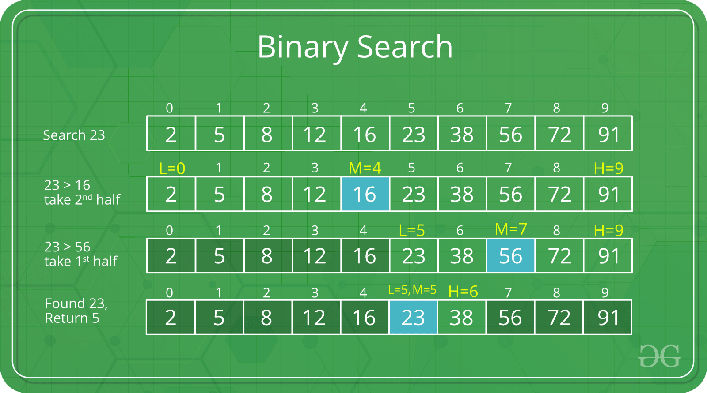
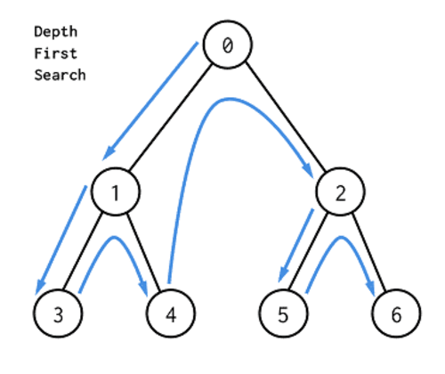

After learning data structures. The first question is: Is there an efficient way to retrieve a specific datum stored in them without having to go through every data? Search algorithms are designed to check for an element or retrieve an element from any data structure where it is stored. In computer science, when searching for data, the difference between a fast application and a slower one often lies in the use of the proper search algorithm. In this section of my blog, I will introduce to you the 3 most common search algorithms: Binary Search, Depth-First Search, and Breadth-First Search.
Given an array of n elements, how can you find a specific element's location? Of course you need to iterate through the entire array because the element can be anywhere in the array. This is called Linear Search with time complexity O(n). However, what if the arry is sorted? Is there a more efficient search algorithm? Binary Search is defined as follows: Search a sorted array by repeatedly dividing the search interval in half. Begin with an interval covering the whole array. Each time we set the middle mid=(low+high)/2. If the value of the search key is less than the item in the middle of the interval, narrow the interval to the lower half. Otherwise, narrow it to the upper half. This narrowing process is done by setting high=mid-1 or setting low=mid+1. Repeatedly check until the value is found or the interval is empty.
Analysis:
Depth-First Search is a graph traversal algorithm which will follow a path from the starting node to an ending node, then another path from start to end until all the nodes are visited. DFS starts the traversal from the root node and visits nodes as far as possible from the root node. This method is implemented using a stack data structure and generally requires less memory than BFS.
Analysis:
DFS is hard! Here is a video explanation:
Breadth-First Search proceeds level by level visiting all nodes on one level before moving on to the next. BFS starts traversal from the root node and visits nodes in a level by level manner. It is usually implemented using a queue structure and generally requires more memory than DFS.
Analysis:
BFS is hard! Here is a video explanation: